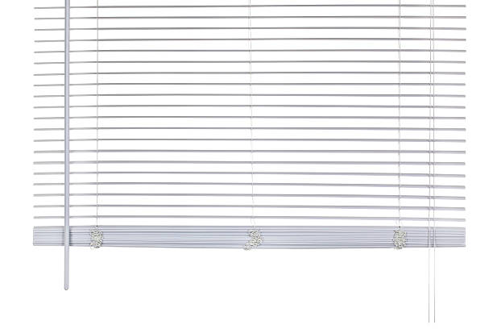

USA - Nationwide
info@deliwindowsblinds.xyz
USA - Nationwide
info@deliwindowsblinds.xyz

Enhance your space with custom shades and blinds tailored just for you. Our expert team will help you design window treatments that reflect your personal style.
Enhance your space with custom shades and blinds designed to fit your windows perfectly. Our team is dedicated to creating the ideal solution for your unique style. Usa - Nationwide
Residential & commercial Windows Blinds
Quality services at affordable prices
Immediate 24/ 7 emergency services


Finding the right window blinds to fit your needs can be a daunting task, especially with the number of options available. Whether you're searching for the perfect styles or comparable brands, having local options can make the process easier and faster. Our company specializes in providing a wide range of window blinds styles, brands, and colors right in your neighborhood. Convenience is key; being just around the corner means you can explore our vast collection without the hassle. Our team is well-versed in the latest trends and can guide you in selecting the perfect fit for your home or office.
We pride ourselves on local expertise and a personal touch. Our knowledgeable staff is committed to helping you understand the different window treatment options available, making your shopping experience seamless and enjoyable. We ensure that when you choose us, you’re not just getting blinds; you’re gaining a trusted partner who values your satisfaction.

When it comes to custom window blinds, we offer a personalized experience that reflects your unique style. Our expert team takes into consideration your specific requirements, from measurements to design preferences, ensuring a perfect fit for every window in your home or office. Our custom blinds installation process is seamless and efficient, guaranteeing that you receive the highest quality products installed by experienced professionals. Choose us for precision, craftsmanship, and a variety of options that cater to your lifestyle and preferences.

Decorating your home doesn’t have to break the bank. Our affordable window blinds provide you with exceptional style and functionality without compromising on quality. We source our materials directly from trusted manufacturers, allowing us to pass significant savings on to you. Whether you're looking for classic, modern, or contemporary styles, our range of budget-friendly options ensures that you can achieve your desired look while keeping your finances in check. Trust us to deliver value, quality, and style all at an affordable price.

Finding the best window blinds companies can be a daunting task. However, our extensive experience and dedication to customer service make us stand out in a crowded market. We are committed to providing superior products and exceptional service, earning customer loyalty through our professional approach and satisfaction guarantee. Our window blinds are crafted from high-quality materials, ensuring durability and style. Choose us for your window treatment needs and see why we're considered the best .

Over time, even the best window blinds may require repair due to wear and tear, accidents, or environmental conditions. Our window blinds repair services offer timely, professional solutions that restore the functionality and appearance of your window treatments without needing a full replacement.
Neglecting minor issues can lead to more significant problems down the road. Whether you’re dealing with broken slats, non-working mechanisms, or damaged cords, our skilled technicians are equipped to diagnose and resolve a variety of repair needs. We focus on providing inexpensive and timely repairs, so your blinds can continue to serve you effectively.
We understand the importance of having your window blinds in good repair, especially in a climate-sensitive area like Usa - Nationwide, where temperature fluctuations can impact their performance. Our team is familiar with the common issues that arise with all types of window treatments, and we have the expertise to address them.
When you choose our window blinds repair services, you'll benefit from our commitment to using high-quality replacement parts, ensuring that your repairs will last. We maintain a comprehensive inventory of components for various window treatments, meaning we can often fix your blinds on-site without delay.
Our customer-centric approach sets us apart. From the moment you contact us, our focus is on understanding your needs and providing reliable solutions. You can trust our team to be honest about the necessary repairs and offer advice on the best course of action for your situation. We believe in transparency, so you'll never be blindsided by unexpected costs.
The repair process itself should be easy and stress-free. We schedule appointments at your convenience and arrive promptly, equipped to handle most repairs in a single visit. Our technicians treat your home with care, ensuring minimal disruption and mess.
In addition to repairs, we also offer maintenance services to keep your blinds in top condition. Regular maintenance can help prevent issues from escalating, extending the lifespan of your window treatments.
At the heart of our window blinds repair services is a dedication to customer satisfaction. Our goal is not just to repair your blinds but also to provide exceptional service that keeps you coming back to us for all your window treatment needs. Enjoy peace of mind knowing that help is just a call away.

When it comes to professional window blinds installation, we are your trusted experts in Usa - Nationwide. Our team of trained professionals ensures every installation is carried out with precision, minimizing damage and maximizing aesthetics. We offer a thorough consultation process to help you select the best blinds for your property and carefully measure each window for the perfect fit. With extensive expertise in various styles such as vertical, horizontal, and motorized blinds, you can trust us to install your window treatments flawlessly.

Shopping locally for window blinds supports your community and provides the opportunity to view the products in person. Our local window blinds store boasts a wide variety of options that cater to different tastes and budget ranges. We pride ourselves on personalized service, ensuring that each customer receives expert advice tailored to their specific needs. By choosing a local provider like us, you also benefit from faster deliveries and installations, contributing to a smoother experience from selection to setup.

Embrace the future of convenience with motorized window blinds installation in Usa - Nationwide. Our motorized blinds offer a sophisticated solution to light management, allowing you to control your window coverings with just the touch of a button. Ideal for hard-to-reach windows or for those who appreciate modern technology, our motorized options enhance both the functionality and style of your home or office. Let our skilled technicians install your motorized blinds and elevate your living space effortlessly.

Choosing the right window blinds for your home is a critical step in enhancing its beauty and functionality. At our company, we specialize in offering a wide array of window blinds specifically designed for homes throughout Usa - Nationwide. We focus on providing quality products that combine style, practicality, and durability to meet the varying needs of homeowners.
Our collection of window blinds for homes caters to diverse tastes and preferences. From classic wooden blinds that provide a warm, inviting ambiance to modern roller blinds that offer clean lines and minimalism, our selection is vast. We also provide options like vertical blinds for large windows and innovative solar shades that maximize natural light while blocking harmful UV rays.
In selecting the right window blinds, it’s essential to consider factors such as room function, privacy needs, and aesthetic style. Our team of experts is here to assist you with a personalized consultation, ensuring you choose blinds that complement your home’s interior design while meeting practical needs.
Durability is a significant consideration when purchasing window blinds, especially in households with pets or children. Our products are crafted from high-quality materials that stand the test of time, ensuring you get excellent value for your investment. Our sturdy blinds resist fading, warping, and sagging, providing lasting beauty and functionality.
Furthermore, we recognize the importance of energy efficiency in today’s eco-conscious world. Many of our window blinds are designed to enhance insulation, helping to regulate temperature at home. This not only contributes to comfort but also potentially lowers energy costs, making it a wise investment for homeowners .
We take pride in offering professional installation services, ensuring that your chosen window blinds are fitted perfectly. Our experienced technicians handle the installation process with care, minimizing disruption and ensuring that your new window treatments operate smoothly from day one.
Our commitment to customer satisfaction extends beyond the sale. We are always available to offer assistance and advice, ensuring you are fully satisfied with your purchase. Should any issues arise, our responsive customer service team is ready to address them promptly.
As your trusted source for window blinds for homes in Usa - Nationwide, we prioritize affordability without compromising quality. We often run special promotions, ensuring that homeowners can access the latest styles and innovations without extending their budgets.
Transform your home with our beautifully designed window blinds that offer both style and functionality. Let us help you choose the perfect window treatments that will enhance your living spaces for years to come.

The right window blinds can significantly impact the functionality and aesthetics of an office space. They provide essential light control, enhance privacy, and contribute to the professional appearance of your business. At our company, we specialize in offering a wide range of window blinds tailored specifically for offices .
Understanding the unique needs of commercial environments, we provide blinds that combine durability with style. Our products cater to various office requirements, from modern roller blinds designed for minimalistic spaces to vertical blinds ideal for large windows that need easy management.
Light control is a paramount concern in any office. Unmanaged natural light can lead to glare on screens, affecting productivity and comfort. Our window blinds allow you to adjust lighting levels throughout the day, promoting a more comfortable working environment. This adaptability ensures your team remains focused and engaged.
In addition to functionality, we prioritize aesthetics in our window blinds for offices. We understand that the appearance of your workspace can influence employee morale and make a positive impression on clients. Our diverse selection enables businesses to choose options that align with their branding and corporate culture, whether sleek and professional or warm and inviting.
Our experienced team is here to assist you in choosing the best window blinds for your office setup. We provide tailored consultations, ensuring you understand all available options, including energy-efficient solutions that will help reduce utility costs.
Installation is crucial to ensure optimal performance. Our professional installers are well-versed in handling various types of blinds, ensuring they fit securely and function appropriately in your office setting. We respect your time and operations, arriving promptly and working efficiently to minimize disruption during the installation process.
Additionally, our commitment to after-sales support means your satisfaction doesn’t end after installation. We offer maintenance services, assistance with any troubleshooting, and repair support as needed. Our goal is to build lasting relationships with our office clients to ensure you always feel supported.
Invest in your workplace with our window blinds for offices in Usa - Nationwide. Combine functionality, style, and comfort to create an environment that fosters productivity and positivity. Our wide range of solutions is designed to meet all of your office’s window treatment needs.

Sliding glass doors can be a design challenge, but our blinds for sliding glass doors offer the perfect solution. We provide various styles that not only complement your interior décor but also offer practical light control and privacy. Our expert team guides you through selecting the right treatments that elevate your space and function seamlessly with your sliding doors. Trust us to provide stylish and functional solutions that stand up to daily use.

Nothing adds a touch of elegance and warmth to your home’s décor quite like wooden window blinds. They offer a timeless appeal, complementing various interior styles from traditional to modern. Our company specializes in professional wooden window blinds installation in Usa - Nationwide, providing an exceptional selection that enhances the beauty of your spaces while offering functionality and practicality.
Our wooden blinds are made from high-quality materials, crafted to ensure durability and performance. Each product is designed to resist warping and fading, ensuring that your blinds maintain their beauty and functional integrity over the years. With various finishes and slat sizes available, you can customize your wooden blinds to reflect your style and preferences.
The advantages of wooden window blinds extend beyond aesthetics. They offer excellent light control, enabling you to adjust the slats to create the desired level of brightness and privacy in your home. They are particularly suitable for bedrooms and living rooms, where ambiance and comfort are critical.
At our company, we understand that proper installation is essential when it comes to wooden window blinds. Our experienced team specializes in ensuring a perfect fit, with precise measurements and secure mounting for optimal performance. Once installed, our wooden blinds not only look stunning but also operate smoothly, adding to your home’s comfort.
In addition to installation, we offer a personalized consultation service to help you choose the right type and style of wooden blinds for your rooms. Our team is knowledgeable in various design aesthetics, ensuring you find the perfect match for your home’s décor.
Wooden blinds also provide energy efficiency benefits by helping regulate temperature within your home. By keeping direct sunlight out, they can contribute to lowering heating and cooling costs, making them a smart investment for homeowners in Usa - Nationwide.
Customer satisfaction is our priority, and we are dedicated to providing exceptional service from the moment you contact us. We pride ourselves on our transparent pricing with no hidden fees, ensuring you know what to expect from the installation process.
Choose our experienced team for wooden window blinds installation and enhance your living spaces with these timeless, elegant window treatments that offer beauty and functionality.

Vertical window blinds are an excellent solution for large windows and sliding doors, enabling excellent light control and privacy. Our vertical window blinds come in various materials, colors, and patterns, allowing you to create an ambiance that aligns with your taste. We focus on quality and reliability, offering products that withstand daily use while maintaining their beauty. Trust our knowledgeable staff to assist you from selection to installation, ensuring a transformation that you will love for years to come.

Faux wood window blinds offer a perfect balance between the beauty of natural wood and the resilience of synthetic materials, making them an ideal choice for homeowners seeking style without the high maintenance requirements. Our company specializes in faux wood window blinds installation and sales providing a wide array of options that cater to diverse tastes and practical needs.
One of the most significant advantages of faux wood blinds is their durability. Unlike real wood, faux wood can withstand fluctuations in humidity without warping or cracking, making them an excellent option for areas prone to moisture, such as kitchens or bathrooms. This makes faux wood blinds a practical choice for any room in your home, allowing you to enjoy the aesthetic of wood while benefiting from longevity.
Our faux wood blinds come in various finishes and colors, allowing you to replicate the look of natural wood without the upfront costs. They are available in several sizes and styles, ensuring you find the right fit for your windows. You can achieve that warm, inviting ambiance in your home while staying within your budget.
In terms of light control, faux wood blinds function just like their wooden counterparts, allowing you to adjust slats for optimal privacy and brightness. This versatility is especially valuable in spaces where you need to regulate light levels, such as bedrooms and home offices.
The installation of faux wood window blinds is straightforward with our professional installation services . Our experienced team ensures that every blind is correctly measured and fitted, allowing them to operate smoothly and look stunning in your living space.
Furthermore, faux wood blinds are relatively low-maintenance compared to real wood options. They can be cleaned easily with a damp cloth, making them a practical choice for busy households and offices. Their durable design also means that scratches and dents are less likely, ensuring your blinds stay looking fresh for years to come.
At our company, customer satisfaction is our priority. We believe in transparent pricing and are committed to providing the best solutions that fit your budget. Our knowledgeable team is always ready to help, whether you have questions about product selection, installation details, or maintenance advice.
Transform your space with our premium faux wood window blinds . We are dedicated to providing beautiful, durable window solutions that enhance your home or office while reducing upkeep requirements.

Achieving complete darkness in your home or office is essential for getting a good night's sleep or maintaining focus during the day. Our affordable blackout blinds provide excellent light-blocking capabilities without straining your budget.
Available in various styles and colors, our blackout blinds combine functionality with aesthetics. They are perfect for bedrooms, home theaters, and offices, where light control is crucial. Our experts are ready to assist you in finding the ideal blackout blinds that suit your space and meet your requirements while providing professional installation for optimal performance.

Roller window blinds are the epitome of simplicity and function. Our roller window blinds installation services make it easy to achieve a clean, modern look in any space. Available in a multitude of fabrics, colors, and opacity levels, roller blinds can adapt to your specific needs, whether you're seeking light filtration or complete blackout. Trust our professional installation team to get everything set up correctly, providing you with window treatments that enhance not only the aesthetic but also the practicality of your home or office.

When you search for the best window coverings near me in Usa - Nationwide, our company stands out for its diverse selection and unmatched quality. We offer a comprehensive array of window treatments that cater to both residential and commercial needs. Our expertise lies in understanding customer preferences and providing tailored solutions, ensuring you receive not only the best products but also exceptional service. Explore our range and discover why we are the top choice for window coverings in the area.

Installing window blinds at home is a significant step in showcasing your style while enhancing functionality. Our home window blinds installation services guarantee a professional finish, providing you with peace of mind that your window treatments will be installed expertly. We offer a variety of options that cater to diverse tastes and requirements, ensuring you find the ideal solution for your home. Trust our experienced team to handle every detail from start to finish.

Understanding the window blind installation cost is crucial when planning your home improvement budget. we pride ourselves on providing competitive pricing without compromising on quality. Our transparent pricing structure ensures you know exactly what you’re paying for, including installation, materials, and any additional services you might need. Contact us for a detailed consultation and estimate that considers your specific requirements, so you can enjoy the benefits of new blinds knowing you made a wise investment.

Maintaining clean window blinds is vital not only for aesthetics but also for extending the life of your treatments. Our professional window blind cleaning services effectively remove dust, allergens, and grime from all types of blinds. We utilize specialized cleaning solutions and equipment that ensure a deep clean without damaging your window treatments. Regular cleaning helps maintain your blinds’ functionality and enhances their appearance, making us your best choice for reliable and efficient cleaning services.

In an era where energy efficiency is a priority for many homeowners, our selection of energy-efficient window blinds offers an ideal solution to enhance comfort while reducing heating and cooling costs. Our company specializes in providing a variety of energy-efficient window blinds tailored to meet the needs of residents .
Energy-efficient window blinds are designed to minimize thermal transfer, keeping your home comfortable year-round. During the hot summer months, they can help block incoming heat, reducing the strain on your air conditioning system. In the colder months, these blinds can retain warmth, contributing to a more energy-efficient home.
We offer several styles of energy-efficient window blinds, including cellular shades, which feature honeycomb structures that trap air and provide insulation. Roller blinds, wooden blinds, and plantation shutters can also be energy-efficient solutions when chosen with insulation properties in mind.
Our expert team is dedicated to guiding you through the selection process, helping you find the best options to fit your energy efficiency goals and personal style. We understand that every home is unique, so we work closely with you to identify the best products that meet your home’s specific needs.
Professional installation is a crucial factor in maximizing your energy-efficient window blinds' performance. Our experienced team in Usa - Nationwide ensures that your blinds are fitted securely and correctly, preventing drafts and keeping the intended energy-saving properties intact.
In addition to enhancing comfort and energy efficiency, many of our window blinds come in a range of stylish designs, allowing you to enjoy beauty and functionality in your home. Achieving the perfect balance between style and sustainability is at the core of what we do.
Our commitment to customer satisfaction means you will receive exceptional service and support throughout your journey. We are always available to answer any questions or provide guidance on how to get the most out of your energy-efficient window blinds.
Invest in comfort and sustainability with our energy-efficient window blinds in Usa - Nationwide. Let us help you enhance your home’s energy performance while elevating its beauty with stylish window solutions.

In today’s energy-conscious world, solar window blinds offer an innovative solution to maximize natural light while minimizing heat gain. Our company specializes in solar window blinds installation providing stylish and efficient options for energy savings and comfort in your home or office.
Solar blinds are designed with advanced materials that filter sunlight, reducing glare without completely blocking the view. This feature makes them ideal for spaces where you want to maintain a connection to the outdoors while managing light and heat effectively.
Our selection of solar window blinds comes in various styles and colors, allowing you to choose options that match your décor while providing the desired functionality. Whether you prefer sleek roller shades or elegant panel systems, we have the perfect solution tailored to your aesthetic preferences.
The benefits of choosing solar window blinds extend beyond aesthetics. These blinds play a crucial role in improving energy efficiency by reducing reliance on artificial lighting during the day, ultimately decreasing your overall energy consumption.
Professional installation of solar window blinds is essential for optimal performance. Our experienced technicians understand the nuances of these products and ensure that they are fitted correctly, providing effective light control and reliable operation.
In addition to installation, we provide consultations to guide you in selecting the best solar blinds for your needs. Our team is knowledgeable about the latest advancements in solar window treatments and can help you understand the features and benefits of each option.
We pride ourselves on our commitment to customer service. From the initial consultation through the final installation, our goal is to ensure a smooth and enjoyable experience. We provide transparent pricing with no hidden fees, ensuring you know exactly what to expect.
Harness the power of the sun with our solar window blinds installation . Let us help you transform your living spaces with functional, energy-efficient solutions that enhance both comfort and style.

The right window blinds can greatly enhance your office's productivity and comfort. Our comprehensive office window blinds installation services are designed to create a professional atmosphere while meeting your light management needs.
We offer various styles, including modern roller shades, elegant vertical blinds, and traditional wooden options, all crafted for durability and functionality. Our experienced team will assist you in selecting the best products for your office space and provide professional installation to ensure optimal performance. Create a working environment that promotes focus and efficiency with our expertly installed window blinds.

As your premier local blinds and shades store in Usa - Nationwide, we pride ourselves on our extensive selection and superior customer service. Visiting our store allows you to explore a variety of styles, colors, and materials in-person, guided by our knowledgeable staff who can provide personalized recommendations. Whether you're looking for functional shades or decorative blinds, we’re here to help you find exactly what you need. Supporting local businesses not only strengthens the community but also ensures you receive tailored service and expertise that larger chains may lack.
USA - Nationwide Windows Blinds Pros
(888) 912-1629
info@deliwindowsblinds.xyz
09.00 AM - 09.00 PM
09.00 AM - 12.00 PM